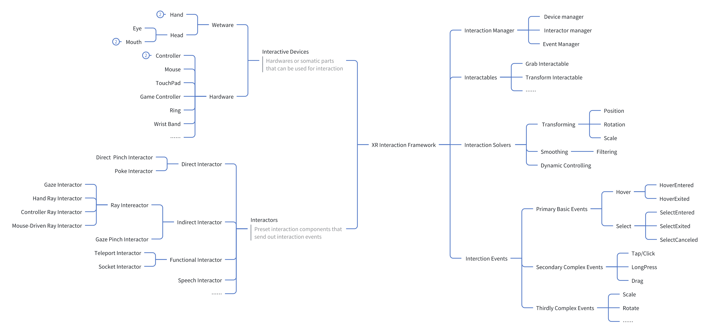
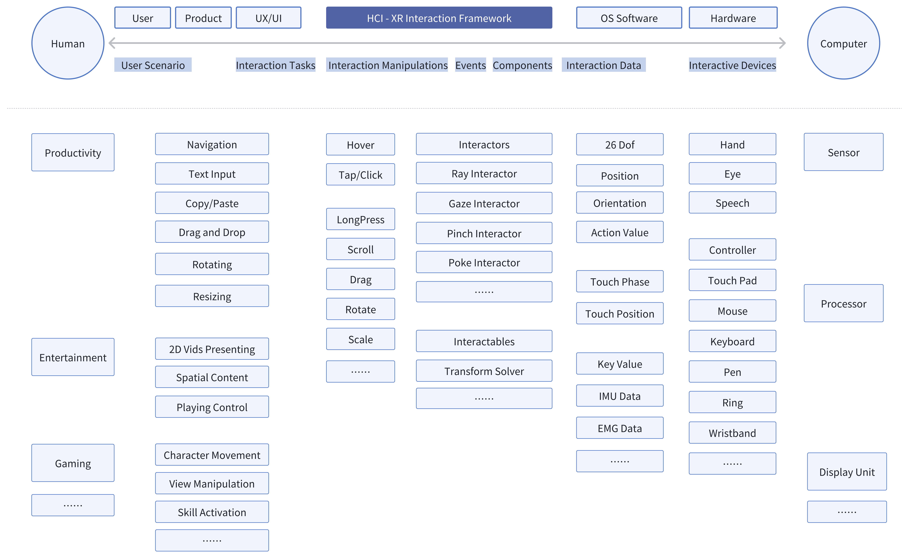

Overview
🏢As a leading XR company, PICO specializes in XR hardware and immersive interaction technologies, driving innovation in spatial computing and user experience.
👨💻During my time at PICO, I contributed to the definition and innovation of XR interaction frameworks, focusing on interaction standardization, novel input methods, and immersive gameplay experience design. My work spanned technical research, hardware-software exploration, and system architecture development, helping to enhance user interactions and interaction efficiency in XR environments.
🔒All the content presented here has either been publicly released, is non-confidential, or has undergone proper de-identification to ensure compliance with information security and confidentiality standards.
XR Interaction Framework
The XR Interaction Framework provides a structured approach to defining interaction paradigms across various XR platforms. It integrates interaction devices, event systems, solvers, and interactor logic to create seamless and intuitive user experiences in VR, AR, and MR environments.
This framework references industry-standard toolkits:
- XRI (XR Interaction Toolkit) – Unity's modular framework for handling interactions.
- MRTK (Mixed Reality Toolkit) – Optimized for HoloLens and cross-platform MR development.
- AndroidXR – Google's XR framework integrating hand-tracking, eye-tracking, and controllers.
- VisionOS – Apple's spatial computing framework for visionOS applications.
⚠️ The diagrams presented here are abridged representations of my formal work and have been de-identified for confidentiality purposes.
XR Interaction Framework Components
Interactive Devices
- Hardware Devices: Controllers, Mouse, Touchpad, Game Controllers, Wearables (Rings, Wristbands).
- Wetware Devices: Hands ✋, Eyes 👀, Head 🧑🦱, Mouth 🗣️ as biological input interfaces.
Interactors
- 👉 Direct Interactors: Pinch, Poke interactions.
- 🎯 Indirect Interactors: Raycasting-based (Hand Ray, Controller Ray, Gaze Ray).
- 🎤 Functional Interactors: Teleport, Socket, Speech Input.
Interaction Solvers
- 🔄 Transforming: Position, Rotation, Scale.
- 🔍 Smoothing & Filtering: Enhancing precision.
- 🤖 Dynamic Control: Adaptive interaction systems.
Interaction Events
- 🎈 Primary Basic Events: HoverEntered, SelectEntered, SelectCanceled.
- 🎛️ Secondary Complex Events: Tap/Click, Long Press, Drag.
- 🎡 Tertiary Events: Scale, Rotate, Gesture-based interactions.
Workflow of XR Interaction Process

1️⃣ User Inputs & Sensors
Interactive devices (hardware or wetware) collect user input via controllers, gestures, eye-tracking, or voice commands.
2️⃣ Interactor Processing
The system determines whether input is direct, indirect, or functional and triggers corresponding events (Raycasting, Gesture Tracking).
3️⃣ Interaction Solvers & Object Manipulation
Events are processed through solvers like Transforming, Smoothing, and the system applies dynamic responses.
4️⃣ System Response & Feedback
- 🎨 Visual Feedback: UI responses, highlights.
- 🎮 Haptic Feedback: Vibration, force feedback.
- 🔊 Auditory Feedback: Sound cues, voice prompts.
5️⃣ Final Execution & Loopback
The system updates interaction states and ensures real-time tracking for smooth user interaction.
Conclusion
This XR Interaction Framework and workflow provide a standardized, modular approach for designing intuitive and efficient user interactions in XR environments. By referencing XRI, MRTK, AndroidXR, and VisionOS, this system ensures compatibility across multiple XR platforms.
⚠️ Confidentiality Notice: The content and diagrams shown here are de-identified representations of my work.
OS Cases
Optimization of OS Interactions
In my role at PICO, I worked on optimizing operating system interactions to improve user engagement and system performance. This included refining gesture recognition algorithms 🤏, enhancing multi-touch capabilities 👆, and ensuring smooth transitions between different interaction modes. Additionally, I developed a fuzzy-gaze-like strategy for eye-tracking 👀 to enhance precision and responsiveness in user interactions.
Solutions for OS Apps & Services
I contributed to developing solutions for OS applications by implementing adaptive user interfaces and integrating AI-driven interaction models 🤖. These solutions aimed to provide a personalized user experience, adapting to user preferences and behaviors across various XR platforms. Additionally, I worked on enhancing OS services such as the MR safety boundary to ensure user safety, and developed spatial input methods to improve interaction precision and efficiency.
XR+AI HCI Research
My research in XR+AI HCI focuses on integrating artificial intelligence to enhance human-computer interaction in extended reality environments. This involves exploring innovative ways to leverage AI for improving user experience and interaction efficiency 🤖.
AI-Driven Interaction Paradigms
I explored the integration of AI with XR to create more intuitive and efficient interaction paradigms. This research focused on developing AI-driven systems that can adapt to user preferences and behaviors, providing a personalized and seamless user experience 🌟.
Core Principles of XR UI/UX
The core of my research lies in understanding the fundamental principles of XR HCI, aiming to create intuitive and immersive user experiences. This includes studying user behavior, interaction patterns, and the impact of various XR technologies on user engagement 🎮.
Enhancing XR Interaction Performance
I conducted extensive research on XR interaction performance to identify bottlenecks and optimize system responsiveness. This research helps in enhancing the fluidity and naturalness of interactions, ensuring a seamless user experience ⚡.
Innovations in XR Interaction Devices
My work on XR interaction devices involves evaluating and improving the effectiveness of various input devices, such as controllers, hand-tracking systems, and eye-tracking technologies 👀. This research aims to expand the possibilities of user interaction in XR environments 🌟.
XR Gameplay
Before I came to the department of HCI, I worked as a technical designer in the department of Tech and Art, working on some innovative gameplay for demonstrating the MR feature of the headset.
My gameplay contributions lie in two specific projects:
2022 Chinese New Year Mixed-Reality Showcase
Bilibili video showcasing the 2022 Chinese New Year Mixed-Reality experience.
This project demonstrates the potential of PICO 4 in mixed reality (MR), featuring an operation activity during CNY 2022. It included a New Year gift box and several different props with MR features. I was in charge of the dragon dance wand that can trigger a spatial snake-like game.
Watch the real-time effect recording of our outcome:
YouTube video of the real-time effect recording of the 2022 Chinese New Year showcase.
MR Multi-Player Shooting Game
This project is a mixed reality multi-player shooting game with rich property features.
YouTube video of the MR Multi-Player Shooting Game.